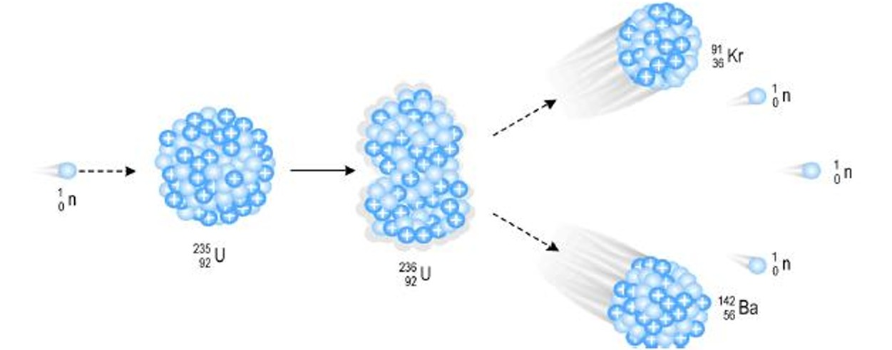
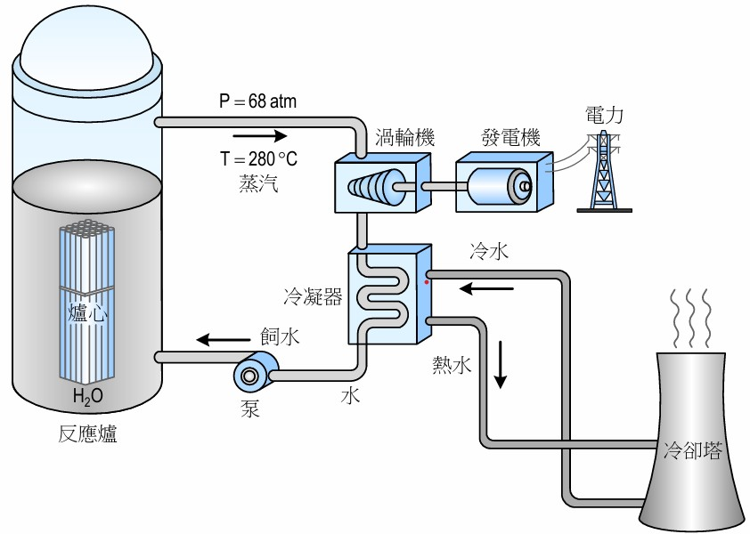
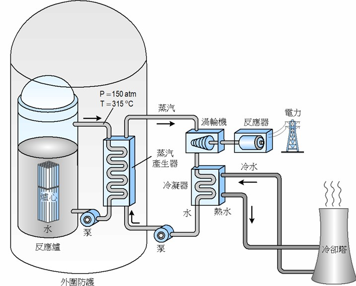
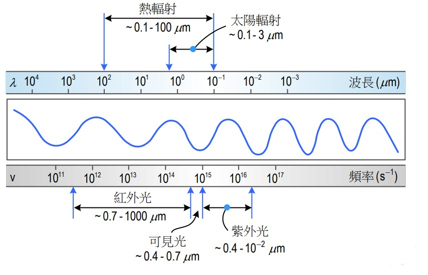
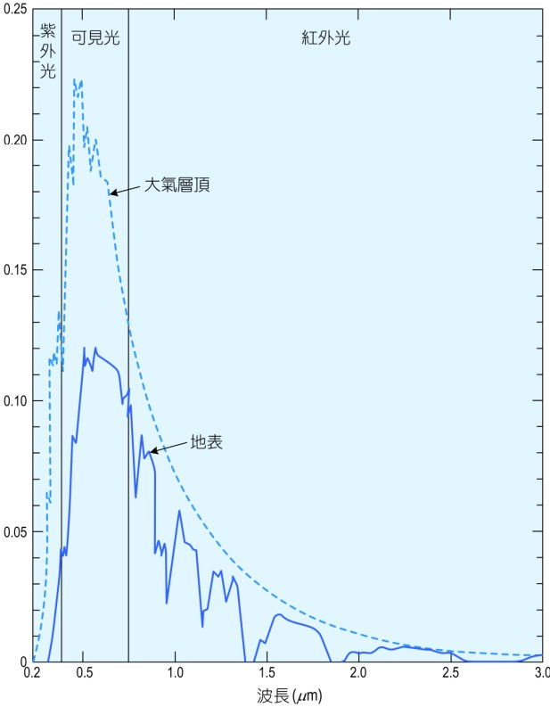
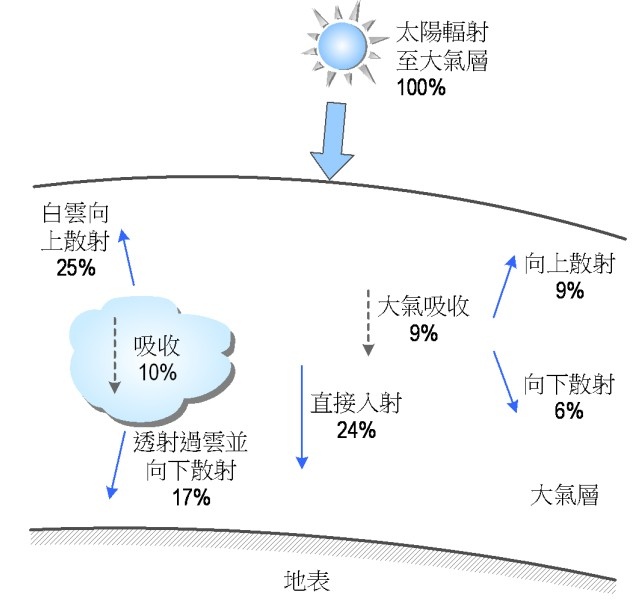
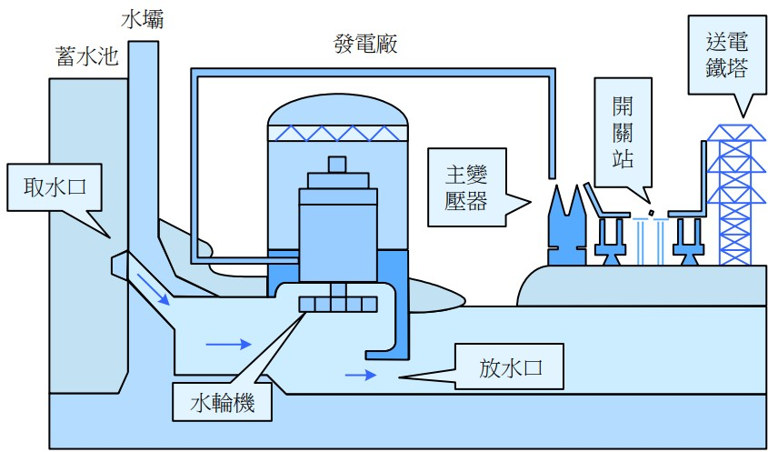
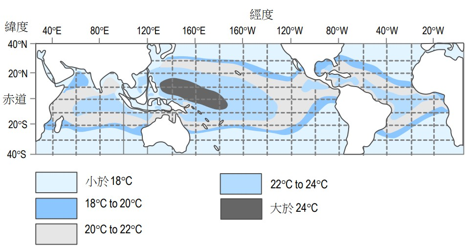
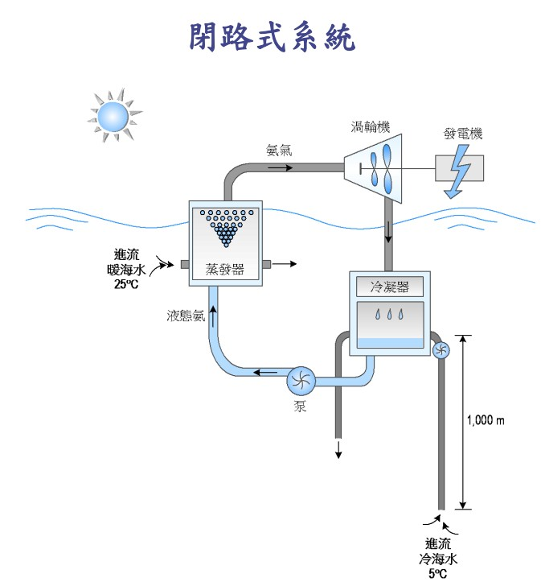
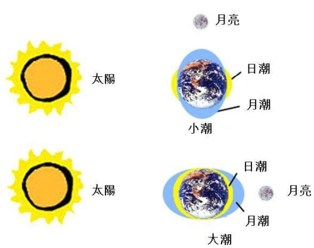

能源工程概論
點擊以檢視簡報核能概述
至2020年底為例, 全球共有448座核反應爐運轉, 並提供了2553208GWh 的電力. 目前全球共有54座核反應爐在19個國家興建中, 未來將加入運轉. 台灣共有2座核電廠 ( 4座核反應爐 ) 運轉中(核一廠2座核反應爐已除役，第4座核電廠已停止 興建 ), 2020年核能所提供的能源佔所進口能源的6.60%. 比起化石燃料, 核能儲存空間小, 不會排放空氣污染物至大氣 但核能發電所排放的廢熱可能引起熱污染, 造成海洋生態浩劫 特別是放射性核廢料的儲存及去處, 目前已是極為棘手之問題
鈾同位素中, 鈾238(238U)在地球的含量約佔99.3% . 而鈾235僅佔0.7%, 因而鈾235的提鍊及濃縮便是核能應用的重要工作 . 如欲核能發電, 235U的濃度需達3%左右, 其餘97%則是238U . 但如欲發展核武, 235U的濃度則需超過90%方能產生核爆 . 換言之, 一般核電廠並不會發生核子爆炸的現象
核分裂與連鎖反應
核能發電的理論基礎為愛因斯坦的質能互換公式
欲產生核分裂, 首要條件就是產生連鎖反應
核分裂反應
臨界質量: 即產生連鎖反應所需的最小燃料質量
鈾235約為15kg, 而鈽239則需9kg

核子反應爐
控制棒
控制棒用於控制核分裂的反應程度
常以硼化物製成, 置於爐心以吸收部分中子
若控制棒完全插入爐中, 反應爐將完全停止反應
若控制棒完全抽出, 核分裂反應將十分激烈
沸水式反應爐(Boiling Water Reactor, BWR)
核電廠的中心部位為反應爐爐心
爐心放置約含有35,000支的鈾燃料棒.
反應爐除了爐心, 亦包含大量水. 水具有兩個作用
- 將核分裂所產生的熱能帶走
- 調節或降低核分裂所產生的中子能量
水受熱後形成約280°C, 68 atm的高壓蒸汽
進而推動渦輪機發電
其後再經冷凝成液態水以飼水形式送回容器中
而產生的中子撞擊水分子的氫核後喪失大量能量而降低速度
一般而言,
2MeV的中子在短時間撞擊18次的水分子後
其能量將降至0.025eV

壓水式反應爐(Pressurized Water Reactor, PWR)
爐心中水可被加熱至約315°C, 150 atm
因壓力足夠, 壓水式反應爐中的水始終為液態
受熱的水流到熱交換器或蒸汽產生器後
將熱傳予另一迴路的水, 形成蒸汽推動渦輪機進而發電

太陽能
藉由太陽照射, 利用太陽光能量來轉換成電或熱
為永久性能源, 使用時不會帶來污染與增加地球的熱負荷
但其能量密度低, 又需考量時間與地區性
且相較於化石燃料, 現階段設置費用與成本仍較高
太陽輻射
太陽輻射以電磁波的形式傳到地球, 包括可見光、紫外線、紅外線等

太陽常數
指在地球大氣層頂垂直於太陽光方向上, 每平方公尺接收到的太陽能
下圖為不同波長太陽光在大氣層頂與地表的輻射強度圖
得出 太陽常數 Gs=1353W/m2(數值不受大氣吸收或散射影響)

然而地面實際受到的輻射會因雲層、空氣、水蒸氣等吸收和散射影響
透過下圖得知大氣層和雲層會吸收或散射掉約 53%
的太陽能量
地表實際接收到的太陽輻射能量只有 47% 左右

太陽能利用的潛力
以美國為例, 太陽常數為1353 W/m2，
假設太陽輻射到達地面的平均能量為600 W/m2, 即1520
Btu/ft2
而美國總面積為3.615×106平方英哩
以日照8小時計,
美國一年可得到太陽能總量為5.6×1019 Btu。
美國2022年的總能源消耗量為9.2943×1016 Btu
該能量僅約為太陽能量的六百分之一而已
如果美國能自太陽能中取得 0.17%的能量,
已足夠全國能量所需
水力發電
水力發電
其基本原理是利用水位落差, 配合水輪發電機產生電力
優點
- 沒有污染性物質產生並排放到空氣中或水中
也沒有廢熱或熱污染的問題 - 水力發電廠的運輸只依賴再生能源資源(ex:水)
電廠運轉的生命期可達數十年, 且維護要求較少 - 可依據實際電力需求隨時進行調整
即使是尖峰負載也能符合電力調度要求 - 建立的水庫具有多重功能
例如蓄水以供灌溉、防洪及提供都市飲水等
缺點
- 建立水壩會對環境造成某種程度的衝擊
以及歷史人文景觀的改變與生態的破壞 -
泥沙會堆積在水庫中而形成淤泥
因而水庫的壽命約50到200年之間
淤泥所引發的問題目前為止尚無解決對策 -
水庫下游人口將暴露在水壩潰堤所造成危害的風險中
若發生天然災害 ( 如地震 ) 或人為破壞 ( 如戰爭 )
其可能造成大量人口的傷亡及都市破壞
水力發電廠之結構圖

水力發電廠分類
依照水位的高低分類
- 低水頭:水位低於30m
- 中水頭:水位介於30~300m之間
- 高水頭:水位高於300m
依照裝置容量分類
- 小型發電廠:裝置容量小於25,000 kW
- 中型發電廠:裝置容量介於25,000到250,000 kW
- 大型發電廠:裝置容量大於250,000 kW
水源運用的情況
-
A.川流式發電廠:
依河川自然流量運轉
河川流量大時, 輸出電力可達設計時全廠總容量
當流量大於發電所需水量, 多餘的水將直接排放到下游
河川流量小時, 可能只輸出全廠容量不到三分之一的電 -
B.水庫式發電廠:
其水庫蓄水量龐大
可以吞沒一季或一年的洪水量供發電廠使用 -
C.抽蓄式(揚水)發電廠:
又稱揚水式發電廠
與其他發電廠的不同為必須有兩個相當大的儲水池
分為在上游的前池, 以及在下游的後池
後池多利用尾水路外的河流, 構築欄河壩攔堵尾水
抽蓄發電利用深夜離峰供電時間所剩餘廉價之電力把下池的水抽回上池, 而於電力系統尖峰供電時間由上池放水發電, 成為價值較高之尖峰電力。 -
D.調整池式發電廠:
水量運用和川流發電廠相同，但蓄水量較川流式大
蓄水量與自然流量配合, 可使全廠各機滿載運轉數小時
水輪機種類
水輪機分為下推式(undershot)、側推式(breast)、
上推式(overshot)、法蘭西式(Francis)及螺旋槳式(propeller)
現代水輪機將位能轉換成電能的效率約介於80到90%之間
海洋能轉換
海洋能主要包含海洋溫差 潮汐 海流 波浪 滲透壓
海洋熱能轉換 (Ocean Thermal Energy Conversion，OTEC)
海洋面積佔據了整個地球表面的70%
其中熱帶及亞熱帶海洋的表層海水易受太陽照射而吸收熱能
比較表層海水及水深1000公尺的水溫, 溫差約在20~25℃間
海洋熱能轉換 即是利用自然海洋溫差
以熱能轉換裝置將熱能轉換成電能
故海洋熱能轉換發電又稱為海洋溫差發電
優點
- 溫差發電是連續而穩定的輸出
- 發電過程產生的廢熱可以回收利用
- 來自太陽能, 是取之不盡用之不竭之能源
- 溫差發電過程產生污染甚少, 對環境破壞的也最小
- 發電廠往往建於海中, 對於居住環境沒有干擾
- 溫差發電可伴生淡水供食用及農業灌溉、養殖用
- 發電廠發出的電可就近設廠
製造淡水、食鹽、海產加工、製取氫氣
缺點
海洋溫差發電在技術上雖可行, 但因投資龐大且發電成本高昂與極深海冷水管路施工風險高等因素受限制, 因此尚未如風力、太陽光電及地熱等再生能源受到重視及實際應用.
全球海洋溫差分佈情形

海洋熱能轉換系統
依照工作流體的流動狀況，海洋熱能轉換系統可分成
-
閉路式系統: 利用表層海水讓低蒸發溫度之工作流體
如氨、丙烷或氟氯碳化物蒸發, 使其推動渦輪機發電
再利用海底下的深層冷海水冷卻工作流體
冷凝成液體後以泵送到海水表層循環使用 -
開路式系統: 開路式系統中工作流體則是海水
海面較溫熱的海水先除去二氧化碳等氣體後
送入真空蒸發槽使海水變成蒸汽
再以此蒸汽推動渦輪機以驅動發電機發電
用過的蒸汽藉由海面下層低溫海水冷凝成冷水後排出

OTEC發電系統
3_潮汐能
潮汐能來自地球－月亮－太陽系統彼此之間
其重力交互反應所產生的動能與位能
而月亮距地球較近，因而其對潮汐形成的影響又大於太陽
若考慮月亮及太陽之質量與兩者和地球之距離
可推估出月亮及太陽對潮汐的影響約為68％：32%
潮汐能複雜性主要因潮汐的變化程度會因時間而改變
潮汐起伏的週期約12.5小時(12hr24min)
一天約完成二個潮汐的循環
海岸每個月則會經歷一次大潮及一次小潮
月亮與太陽所引起之漲潮稱為月潮及日潮
